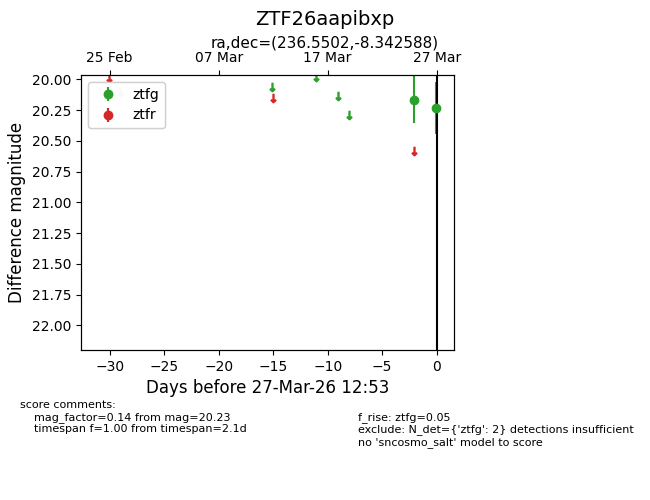
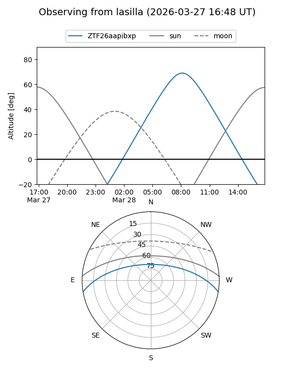
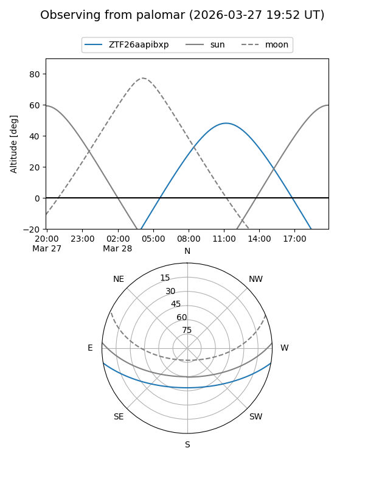
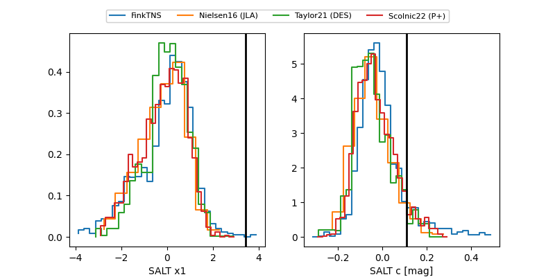

ZTF26aapibxp
Target ZTF26aapibxp at 2026-03-27 12:56
Aliases and brokers:
FINK: link
Lasair: link
ALeRCE: link
alt names
ZTF26aapibxp (ztf,fink_ztf)
Coordinates:
equatorial (ra, dec) = 236.5502,-8.34259
equatorial (HMS+DMS) = 15:46:12.04,-08:20:33.32
galactic (l, b) = (359.2583,+34.78949)
Flags:
Photometry:
last ztfg=20.23
2 ztfg detections
Lightcurve

Visibility


Additional plots
